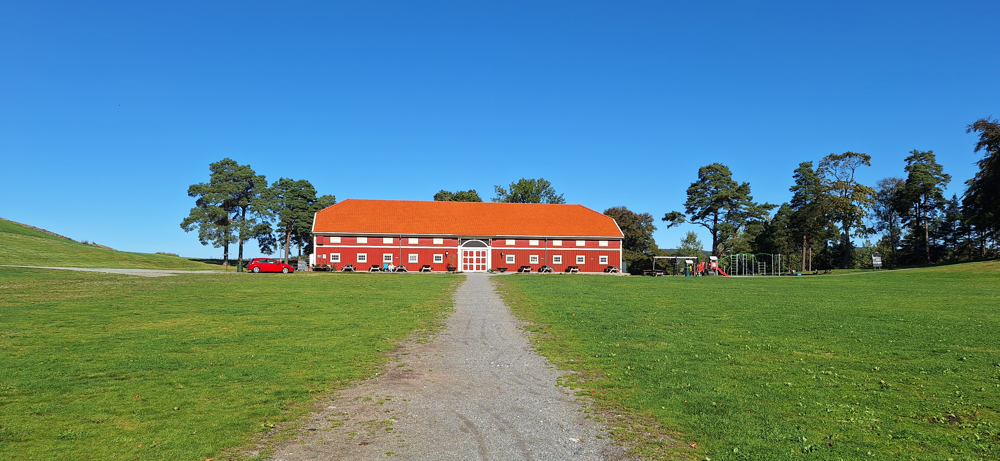

Fredriksten Festning:
Ofte beleiret, aldri beseiret.

Hvert år besøker tusenvis av turister Fredriksten festning og lærer om Karl XII og svenskenes mange angrep på Norge. Likevel er det få som vet at 2024 marker hele 210 år siden våre svenske naboer forsøkte å innta festningen for siste gang.
Hør intervjuet med Magne Rannestad - Kommandant på Fredrksten Festning
Magne Rannestad forteller om de viktigste slagene i festningens histiorie